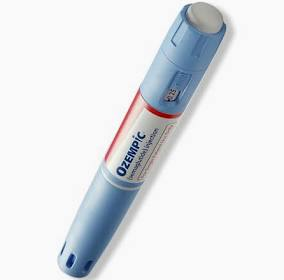

Big Tech: Amazon Mandate to return to Office
Amazon CEO Andy Jassy has directed corporate employees to return to the office five days a week starting January 2, marking a major change from the previous policy that required staff to be in the office at least three days a week. In addition, Amazon aims to streamline its corporate structure by reducing the number of managers. Each S-team organization is expected to raise its individual contributors-to-managers ratio by at least 15% by the end of Q1 2025. The full memo from Jassy is included in the article.
Here you can find the link to the full article.
Learn more

Programming Languages and Libraries: kty Github Repo
kty is an SSH server that makes it easy to access Kubernetes resources without using kubectl. It provides a dashboard for interacting with clusters that enables users to run shells in pods, access logs for running and exited containers in a pod, forward traffic from a local machine into a cluster or from a cluster to a local machine, access clusters from any device with an SSH client, and more. kty relies on OpenID providers to verify identity.
Here you can find more about the kty repository.
Learn more
Chicago Sports: Bears Fall to Texans 19-13
The Chicago Bears struggled to find their rhythm in a tough 19-13 loss to the Houston Texans, despite some promising moments from rookie quarterback Caleb Williams.
Williams, the No. 1 overall pick, showed flashes of his talent but was under constant pressure, getting sacked seven times and throwing two interceptions. The Bears' offensive line struggled to hold off a relentless Texans defense, forcing Chicago to play catch-up for most of the night. Their ground game was stifled, managing just 71 rushing yards.
Meanwhile, the Bears' defense worked to keep the game within reach, limiting Texans quarterback C.J. Stroud to a modest 260 yards passing. Although Stroud maintained his interception-free streak, Chicago held the Texans to just one touchdown, largely containing an otherwise efficient offense. Nico Collins was a challenge for the secondary, catching eight passes for 135 yards. Texans running back Joe Mixon briefly left the game with an ankle injury but returned in the second half for a few carries.
Learn more

Miscellaneous: Ozempic a Good Thing?
The public discussion of Ozempic's economics has so far been consistently fatalistic. Many doubt that the drug will benefit more than just the lucky few who can afford it. The people who most need the drug often struggle to get it. As long as it is talked about primarily as a weight loss drug, insurance companies will remain incentivized to treat it as a luxury good. The drug presents a radical opportunity to change the chronic disease landscape in the US, but it may require radical policy changes to make it accessible.
Learn more